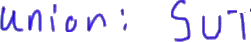
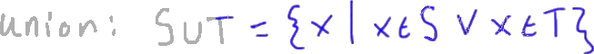
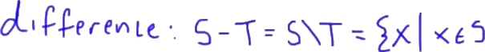
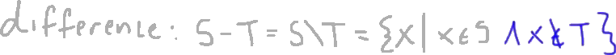
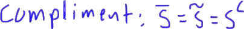
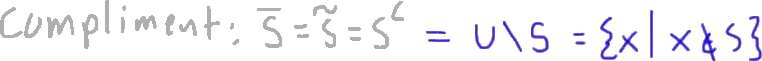
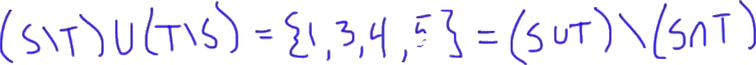

2.2.2 - Set Operations
The following is a summary of a lecture video. You may click on the '+' buttons next to the figures in order to expand further details.
Welcome back to Anton Math.
In this video, we're going to be talking about some of our basic set operations, the most common set operations that we use when we're talking about sets.
Let's let S, T, and R be sets.
I'm not sure I'm going to use R, but just in case.
Now, the first operation I want to talk about is called the Union.
It's just called union.
+

We denote a union, say S union T in this way.

It's not actually a U, it's more like a cup kind of symbol.
You can have a set called U, and it will look a little bit different.
Inside notation, what this is defined as, this is going to be all of the elements X, where X is an element of S or X is an element of T.
Pretty much, we're gluing these two sets together.

We're taking all of the elements of S and all of the elements of T and making a new set that just contains any element that's in one or the other.
Now, remember, this is mathematical or.
Let's just say two was in S and in T, two would still be in here.
It's not an exclusive or.
It includes the case, where X is in both, S and T.
My only requirement is that it's in at least one of them.
We also have an opposite idea in a certain sense, the intersection.
Now, the intersection of sets, let me denote this S intersection T, it's like the union sign, but upside down.
That's going to be defined as all of the elements X, where X is in S and X is in T.
Remember, this is or, this is and.
My requirement here is that it's in both.
If it's in S and it's not in T, then it's not going to be in the intersection.
The intersection is the set of all common elements between the two sets, S and T.
Now, we also have a difference.
+

The difference can be denoted a couple of different ways.
Sometimes you'll see it S minus T, but this is the same thing as S and then it's kind of forward slash T.
What this means is, this is going to be the set of all of elements that are in S and are not in T.

All of the X, where X is in S, and X is not in T.
Basically, we're taking the entire set S and then we're removing any elements from S that happen to be in T.

Then, one last operation we can talk about is called the complement.
+

Now, this is denoted a couple of different ways.
I could write this with S with a bar.
Sometimes, it'll be S with this tilde on top of it.
Sometimes, it'll be S with this little C.
Depends on what text you're using.

These all mean S complement.
S complement, this is going to be with respect to a particular universe we talked about in the last video.
We talked about universe.
This is defined to be the universe and then I take out everything that's in S.
In other words, this is the set of all X in whatever universe I'm talking about.
Maybe that universe is rational numbers, maybe that universe is real numbers, whatever it is I'm talking about, where X is specifically not in S.

Any other X will do as long as it's within that relative universe.
A couple of notes real quick now that we have terminology.
+

Of note that I can write this S T, I could write this as S intersected with T complement.
You see that.
Everything in S that's not in T, that's the same thing here, this is everything in S that's also in T complement or that's also part of the set of things that are not in T.
This is an equivalent idea.
We say that if S intersection T is equal to the null set.
In other words, if S and T have nothing in common, S and T are called disjoint.
These are disjoint sets.
For example, the set of all chairs and the set of all bowling balls are disjoint sets.
There's no chair that's a bowling ball unless somebody's made one that I don't know about.
We call those disjoint.
There are two sets that have no commonality, none of their elements are shared.
I've gone over a lot of terminology.
Let's go ahead and do a quick example before I end this video and go onto the properties of these operations.
Let's just say my S is equal to one, two, three and my T is equal to two, four, five.
Given this, we can calculate out some of these things.
+

My S intersection T, remember that's going to be all of the elements that are in both, S and T.
That's going to be the set containing only the element two.
We see that one and three are not in T, so two is the only element that's in both, S and T.
Now, remember the union is going to be all elements that are in S or T, so one, two, three, four, five.
This is why I keep saying this is like gluing these together.
This is the set of all elements that are just in one of these sets, and we take out any repetition.
Two is in both, but I'm not going to write two twice.
We know that, with sets in general, we don't include any repetition.
The difference S T, that's going to be equal to all of the elements in S that are not in T.
In other words, one and three.
The difference, T-S, that's going to be all the elements in T that are not in S, so four and five because they share that two.
+

Something you need to know, notice if I had this S T union with T-S, that's going to be the elements one, three, four, five.
That's the same thing as the union of S and T minus the intersection of S and T, isn't it?

It's kind of interesting.
We call this an identity.
This is something that's an identity.
In the next video, I'm going to go over a lot of our set operation rules, a lot of these identities so we can use these tools to simplify the same way that we would use an algebra to simplify an algebraic statement.
We can have these long strings of these set operations and we can use some of these rules in the next video to simplify these strings into something much more compact, much more simple.
Will see you there.